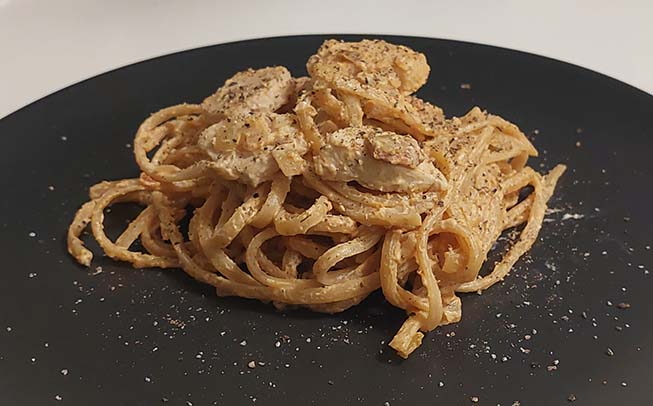

Fettuccine med tomatsauce og bacon
Ingredienser
2 pers.
| 200 g | Fettuccine |
| 1.5-2 pakker | Bacon |
| 70 g | Tomatpuré |
| 1 lille fed | Hvidløg |
| 125 ml | Madlavningsfløde |
| 1 dl | Mælk |
| Salt | |
| Peber |
Fremgangsmåde
- Klip/skær bacon i små stykker og svits dem sprøde på en stor sauterpande
- Kog pasta i letsaltet vand i ca. 10 minutter, til den er al dente
- Imens pastaen koger hældes baconfedtet fra, og presset hvidløg tilsættes
- Tilsæt tomatpuré og madlavningsfløde og rør saucen rundt
- Hæld mælken i saucen og smag til med salt og peber
- Hæld vandet fra pastaen og bland den sammen med tomatsaucen
Retten kan med fordel toppes med lidt hakket persille
- Velbekomme